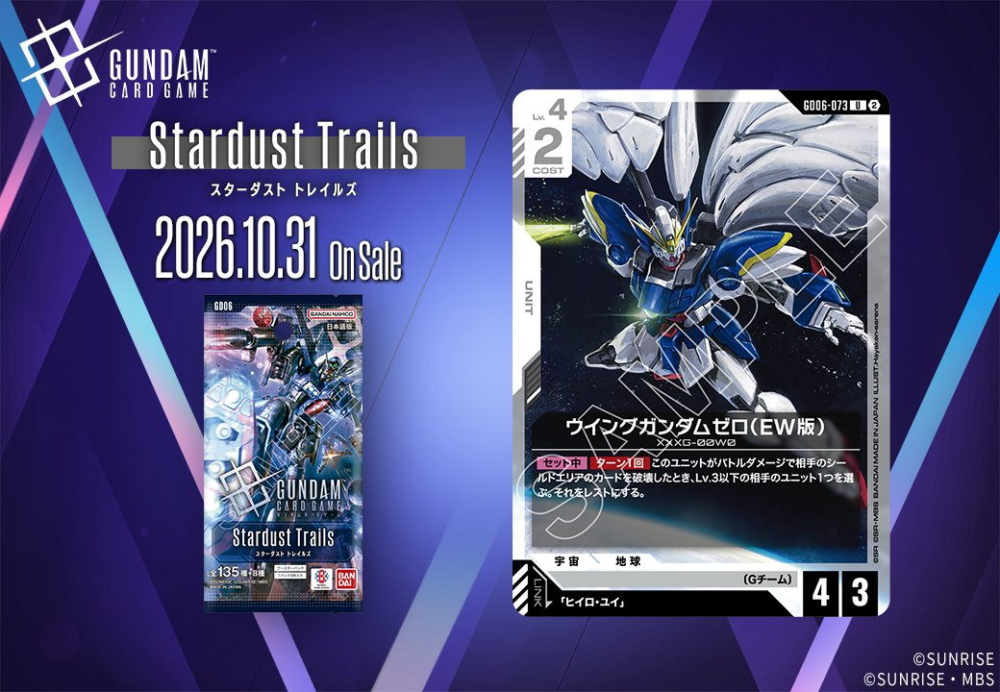
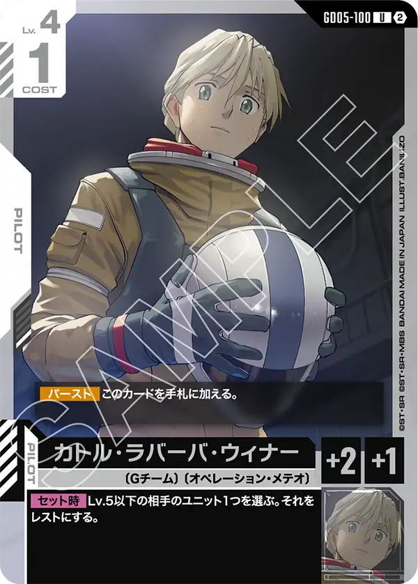

今回は拡張パック「Stardust Trails」（GD06）より、白のカード2枚を紹介します。COMMAND「平和を望む心」（GD06-120）と、「ヒイロ・ユイ」との【リンク】を持つUNIT「ウイングガンダムゼロ(EW版)」（GD06-073）で、いずれも2026年10月31日発売です。
平和を望む心 (GD06-120)
| 色 | 白 | タイプ | COMMAND |
| Lv | 4 | コスト | 1 |
効果: 【バースト】HP5以下の相手のユニット1つを選ぶ。それをレストにする。メイン／アクション 相手のユニット1つを選ぶ。それをレストにする。
平和を望む心（GD06-120）はコスト1のコマンドで、【バースト】でHP5以下の相手ユニット1つをレスト、メイン／アクションでは相手ユニット1つをレストにできる二面構えのカードです。レスト付与は相手のブロッカーを無力化する用途に向き、リック・ディアスやガンダム・ルブリス、エールストライクガンダムといったブロッカー持ちを寝かせて攻撃を通す動きが狙えます。低コストで手撃ちと防御時の両方に機能する点が扱いやすく、2026年10月31日発売のStardust Trailsで白のテンポ管理を補助します。

ウイングガンダムゼロ(EW版) (GD06-073)
| 色 | 白 | タイプ | UNIT |
| Lv | 4 | コスト | 2 |
| AP | 4 | HP | 3 |
| 特徴 | 〔Gチーム〕 | ||
| リンク条件 | 「ヒイロ・ユイ」 | ||
効果: 【セット中】ターン1回 このユニットがバトルダメージで相手のシールドエリアのカードを破壊したとき、Lv.3以下の相手のユニット1つを選ぶ。それをレストにする。
ウイングガンダムゼロ(EW版)はCOST2でAP4/HP3と攻撃寄りのステータスを持ち、「ヒイロ・ユイ」とのリンクを備えたLv.4ユニット。【セット中】でバトルダメージにより相手シールドエリアのカードを破壊したとき、ターン1回Lv.3以下の相手ユニット1つをレストにできるため、攻撃を通しつつ相手の盤面を寝かせられる。レストにした対象がブロッカーであれば次のアタックを通しやすくなる点も噛み合う。2026-10-31発売で、リック・ディアスやガンダム・ルブリスといった《ブロッカー》を並べる白系デッキとも運用しやすい。


関連カード
-
 溢れる慈愛(GD01-118)白系デッキ内採用率38.3% (1972デッキ)
溢れる慈愛(GD01-118)白系デッキ内採用率38.3% (1972デッキ) -
 ガンダム・ルブリス(GD01-086)白系デッキ内採用率31.8% (1639デッキ)
ガンダム・ルブリス(GD01-086)白系デッキ内採用率31.8% (1639デッキ) -
 エールストライクガンダム(ST04-001)白系デッキ内採用率30.3% (1558デッキ)
エールストライクガンダム(ST04-001)白系デッキ内採用率30.3% (1558デッキ) -
 キラ・ヤマト(ST04-010)白系デッキ内採用率29.9% (1539デッキ)
キラ・ヤマト(ST04-010)白系デッキ内採用率29.9% (1539デッキ) -
 リック・ディアス(GD02-079)白系デッキ内採用率26% (1337デッキ)
リック・ディアス(GD02-079)白系デッキ内採用率26% (1337デッキ) -
 ウイングガンダムゼロ（EW版）(GD05-067)白系デッキ内採用率0.9% (46デッキ)
ウイングガンダムゼロ（EW版）(GD05-067)白系デッキ内採用率0.9% (46デッキ) -
ヒイロ・ユイ(GD05-098)白系デッキ内採用率0.3% (15デッキ)
-

カトル・ラバーバ・ウィナー(GD05-100)白系デッキ内採用率0.2% (11デッキ) -
 ガンダムデスサイズヘル（EW版）(GD05-078)白系デッキ内採用率0.1% (6デッキ)
ガンダムデスサイズヘル（EW版）(GD05-078)白系デッキ内採用率0.1% (6デッキ) -
 リーオー(GD05-077)白系デッキ内採用率0.1% (5デッキ)
リーオー(GD05-077)白系デッキ内採用率0.1% (5デッキ)